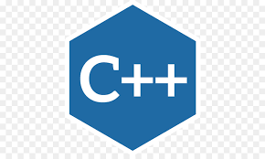

Competences

Maîtrise les logiciels Microsoft
Maîtrise les commandes et les logiciels

Débutant avancé
Débutant

Débutant
Né le 12/12/2001
Etudiant en Informatique et réseaux, à la recherche d'un stage pour apprendre et s'épanouir en condition réelles.
Passioné et curieux des nouvelles technologies j'aimerais en faire mon métier.
Merci de me contacter au 0692 432 181
Contact: antkenriv@gmail.com
Je suis en ce moment en première année de BTS, cette formation m'apprend à manipuler différents types de Système d'Exploitation, langage de programmation et réseaux.
Cette formation m’a permis d'avoir une première approche de l'informatique en général puis d'avoir l'obtention du baccalauréat avec mention assez Bien.
Nom de l'entreprise: Solution Informatique
-Maintenance informatique : Montage d'ordinateur et installé plusieurs OS.
-Tâches administratives : suivi des commandes passées auprès des fournisseurs :
devis, factures et paiements.
Maîtrise les logiciels Microsoft
Maîtrise les commandes et les logiciels

Débutant avancé
Débutant
Débutant